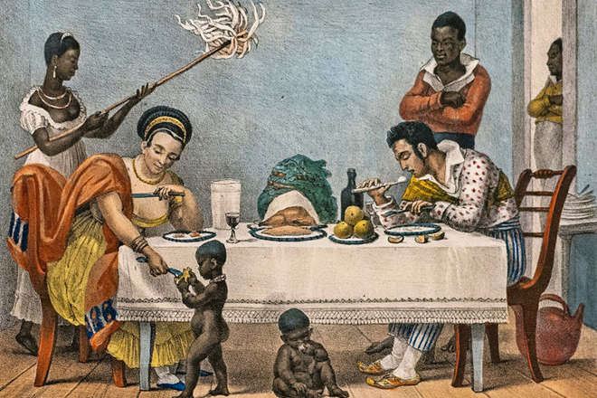
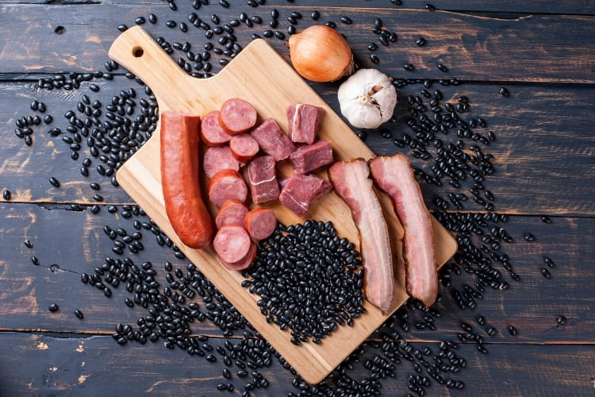
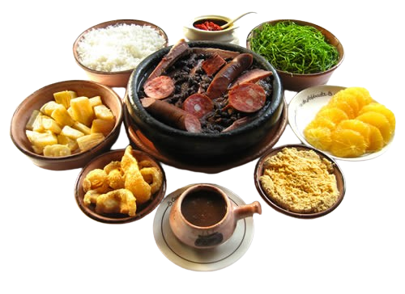
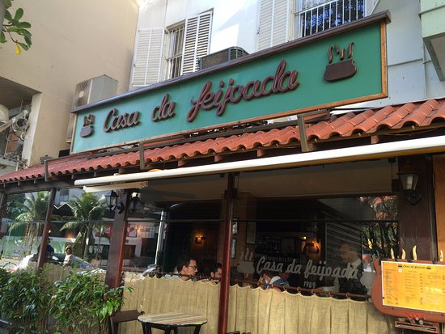

História e Origem
A feijoada é considerada o prato mais típico do Brasil.Alguns historiadores dizem que a feijoada foi criada no Brasil no período da escravidão, quando os escravos recebiam as partes menos nobres do porco, como orelhas, rabos ou pés. Eles então juntavam esses pedaços rejeitados e cozinhavam com feijão, adicionando água, sal e pimentas. Com o tempo, o prato se popularizou e virou símbolo nacional.
Ingredientes
- Feijão preto
- Carne seca
- Costelinha de porco
- Lombo de porco
- Linguiça calabresa
- Alho, cebola, louro e sal

Como é servida?
Acompanhamentos tradicionais incluem arroz branco, couve refogada, farofa, torresmo e fatias de laranja, que ajudam na digestão.

Curiosidades
A feijoada é tradicionalmente servida às quartas e sábados em muitos restaurantes brasileiros. É símbolo de reunião e celebração em família.
A feijoada é uma adaptação portuguesa, com técnicas semelhantes a cozidos de outros países europeus.
